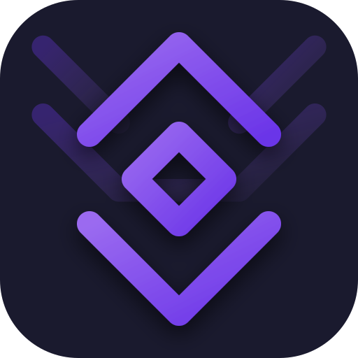

01
Primary Modes
Use Chat, Manage, Bridge as the main modes. Put Terminal in the chrome so it is never buried.

Hermes Relay / UI refreshA mockup direction that keeps Hermes Relay's dark sphere and lavender controls, then borrows the official Hermes Desktop language: compact chrome, hard electric-blue emphasis, a real status strip, sharper management surfaces, and profile-aware sessions.
Use Chat, Manage, Bridge as the main modes. Put Terminal in the chrome so it is never buried.
Replace the fat bottom navigation with a thin live state strip for model, relay, and safety.
Make profile, SOUL, memory, skills, and connection switching feel like agent control, not app settings.
Keep Relay's navy/purple base, but use electric blue, mono metadata, and sparse glyph texture.
Pair, switch, verify routes
SOUL, memory, skills, sessions
Browse, enable, configure
Cron, background runs, delivery
Terminal, voice, notification, media, and relay-session controls share this grant.
Attach to relay shell
Provider, model, output voice
Shared app notifications
Sideload-only gated controls
Config, SOUL, memory, skills
On tablets, foldables, and desktop web surfaces, the same model becomes closer to official Hermes Desktop: sessions/profile navigation on the left, chat in the center, preview or terminal on the right, and a thin status bar across the bottom.
This gives Relay one mental model across phone and larger surfaces without forcing a permanent left sidebar onto a narrow phone screen.